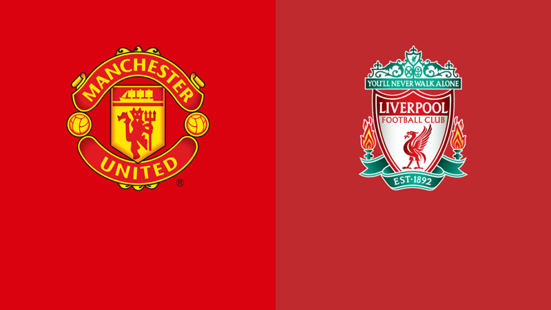

Emocinante encuentro en Old Trafford deja al Arsenal lider a un punto
Los Reds de Jürgen Klopp, vienen de superar por 6 a 1 al Sparta Praga por la Europa League, donde ganó en los octavos de final por un marcador global de 11 a 2, colocándose como el gran favorito a ganar el torneo europeo. En la Premier League se encuentra luchando por el título, junto al Arsenal y el Manchester City, pues solo tienen un punto de ventaja.